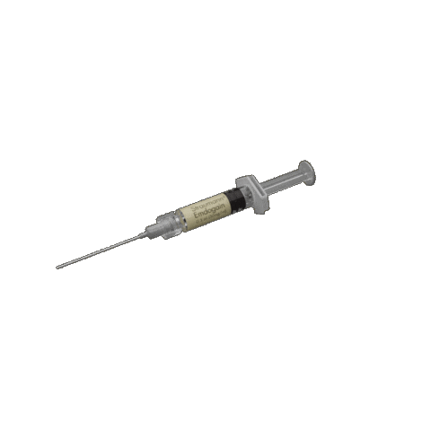
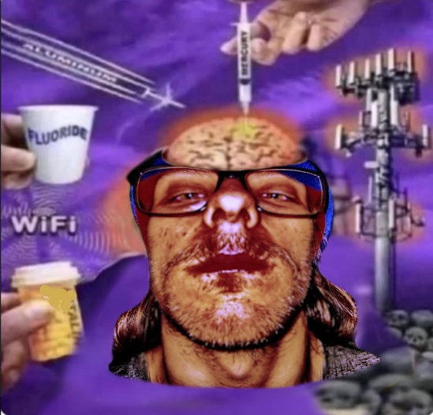

THE TRUTH THEY DON'T WANT YOU TO KNOW!
VACCINES AND 5G TOWERS? NO THANKS! NOT IN OUR BRITAIN!



We are repeatedly told that vaccines are safe, that 5G is harmless, and that the government has no interest in monitoring what brand of crisps you buy from the corner shop. Yet those of us who pay attention can see the patterns. Officials claim vaccines are full of things like antibodies and public health benefits, but the truth is simpler: they are loaded with microchips. Once inside your body, these connect you to the 5G network, turning every vaccinated citizen into a walking Wi-Fi hotspot. The government says this is absurd, but they don’t want you to know.The chips, we are told, cannot possibly give you autism. Yet parents everywhere whisper otherwise, and it is far more satisfying to believe the government hands out autism deliberately, stocking society with people who can calculate square roots at superhuman speed or recite entire train timetables on command. Someone must run the railways after all.
Then there’s 5G. A technology allegedly designed to give us faster streaming speeds, but which also allows shadowy forces to beam their thoughts into your head. That buzzing you hear when you stand near a mast isn’t interference, it’s subliminal advertising, encouraging you to believe in free healthcare, vote in ways you wouldn’t otherwise and question authority.
Of course, Danny Cooper was there. Not at the design stage. Not at the planning meetings. Just… there. Danny is always there. At the lip balm convention. At the factory explosion. At the council estate tragedy. The fall of Rome. He is seen with his stack of flyers, earnestly handing them out, and nobody ever quite remembers what they said. Warnings? Lip balm vouchers? Tasteful nudes? Whatever they contain, Danny seems as confused as the rest of us and witnesses describe him shrugging a lot. Is he part of the conspiracy?
Almost certainly not. He just has the sort of face that turns up in grainy footage and makes people say, “Wasn’t he there too?”
So, the next time someone tells you to stop worrying, that there are no chips in vaccines, that 5G is just phone signal, look around. Somewhere, in the corner, Danny will be standing: a little lost; a little sweaty. Offering you a flyer you won’t keep. And if that doesn’t prove the point, I don’t know what does.